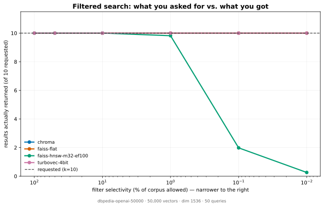
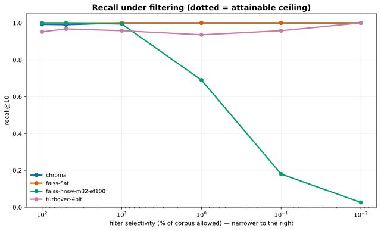

One query. Four indexes. Same filter.
A corpus of — — vectors. A metadata filter allows — of them through — — of the corpus. All four indexes are asked the same query for the top — neighbours, restricted to that same allowed set.
The allowed set is larger than k, so every index could return 10 results. Exhaustive search proves the correct answers exist.
Why this happens
Graph indexes traverse, then filter
HNSW walks a proximity graph built over the whole corpus. When a filter excludes most vectors, the walk keeps landing on disallowed nodes and the candidate set collapses before it reaches the allowed ones. The neighbours exist; the traversal never arrives.
Flat indexes scan everything
A flat index compares the query against every allowed vector, so a filter cannot hide anything from it. It pays in latency and is immune to this failure by construction.
Nothing raises an error
No exception, no warning, no degraded-mode flag. The call returns successfully. If your monitoring records latency and average recall, this is invisible.
This effect is documented — see VectorDBBench, VecBench and Qdrant on ACORN. This page does not claim to have discovered it. What it adds is a per-query view of which result slots went wrong, and a one-command way to check your own embeddings rather than someone else's.
It is a cliff, not a slope
The single query above is one point. Sweeping the filter from — of the corpus down to — shows where each index breaks. Drag the slider.
| Index | Type | Returned | recall@10 | Latency |
|---|
The full sweep
The single query above is one point; these chart the whole run. Both are generated from the same measured data the rest of this page uses.


Reproduce it
On your own embeddings, which is the only measurement that matters to you:
pip install 'vecverdict[turbovec,faiss] @ git+https://github.com/Charan-Hari/vecverdict'
vecverdict demo # the run behind this page
vecverdict filter --dataset mine.npy # your vectors
vecverdict filter --dataset dbpedia # the public embeddings measured here
Measured on —. Absolute latencies are machine-specific; the shortfall is reproduced in CI on Linux, macOS and Windows.